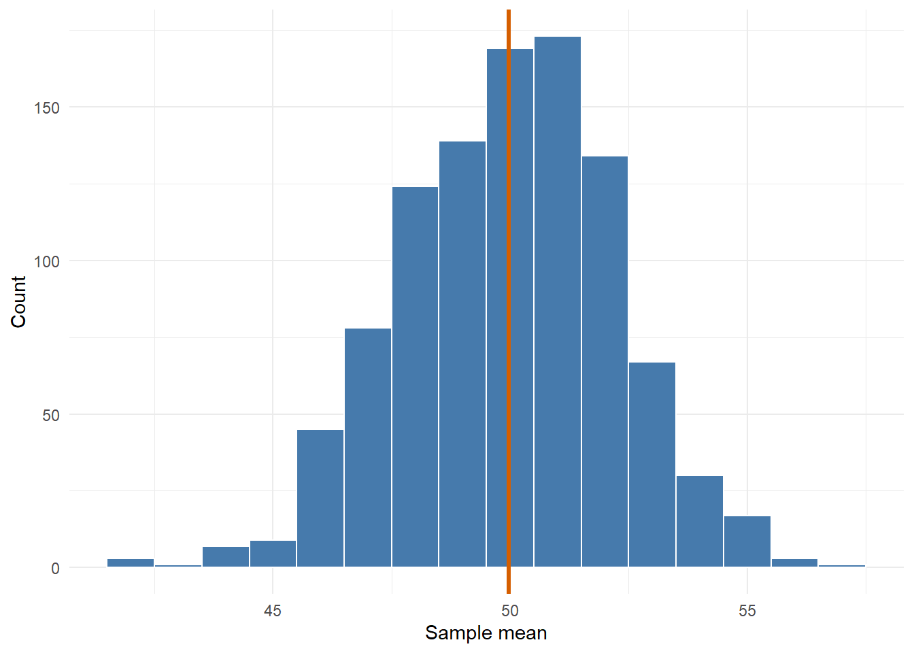
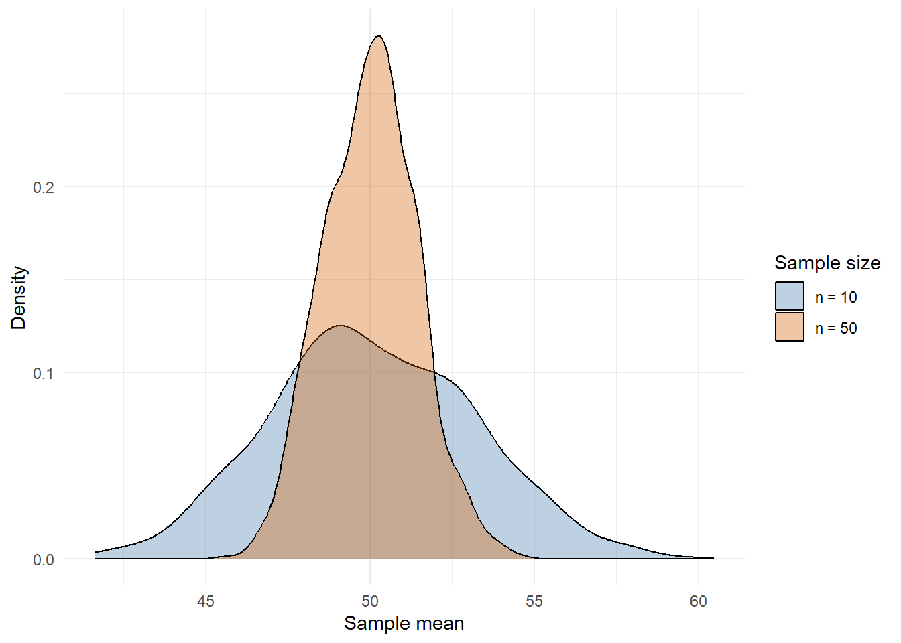

3 Spread and Standard Error
3.1 Reusing The Same Pieces
In the last chapter, we built variance by taking an equation and turning it into a set of small R steps.
That same idea works for lots of summary statistics. We will use the mean, variance, and standard deviation to build towards standard error.
The path is:
values -> mean -> variance -> standard deviation -> standard errorStandard deviation describes how spread out the values are. Standard error describes how much a mean would vary across repeated samples.
We will use the same ten values as in the last chapter, so the mean is still 50:
x <- c(44, 47, 48, 49, 50, 50, 51, 52, 53, 56)
x## [1] 44 47 48 49 50 50 51 52 53 563.2 Files For This Chapter
Download the exercise file for this chapter and save it in the same folder as your my_functions.R:
If you do not have my_functions.R yet, go back to the start of the last chapter and download it from there.
3.3 Load Your Toolbox
In the last chapter you built my_mean() and my_var() and saved them in my_functions.R. Instead of typing them out again, load them:
source() runs every line of code in a file. Your file only contains functions, so running it creates those functions, ready to use.
Before building on them, check that they still match R:
## [1] TRUE
## [1] TRUETwo TRUEs and you are ready. If you see could not find function, check that my_functions.R is saved, and that it is in the same folder as your exercise file.
3.4 Your Turn: Write my_sd()
Standard deviation is the square root of variance. That is one step, and you already have a function that calculates variance.
my_sd <- function(x) {
output <-
return(output)
}
my_sd(x)Use sqrt() on the result of my_var(x).
The function is short because my_var() already does most of the work. Once you have checked a small function, you can build other functions on top of it.
3.5 Check It Against sd()
Same two-part check as before: print both answers, then compare them with all.equal().
## mine R
## 3.333333 3.333333
## [1] TRUEAnd on a second set of values:
## mine R
## 3.605551 3.605551
## [1] TRUE3.6 Standard Error
Standard deviation describes the spread of values in a sample.
Standard error describes the spread of sample means.
That is a different kind of spread. Instead of asking how much individual scores vary, we ask how much the mean would vary if we repeated the sampling process. We will see this happen later in the chapter.
The standard error is:
\[ SE = \frac{s}{\sqrt{n}} \]
where \(s\) is the sample standard deviation and \(n\) is the number of values. In words: work out the standard deviation, then divide it by the square root of the sample size.
What does \(\sqrt{n}\) mean here?
3.7 Your Turn: Write my_se()
The recipe is:
- count the values;
- calculate the standard deviation, using your own
my_sd(); - divide the standard deviation by the square root of the count.
my_se <- function(x) {
n <-
sd_x <-
output <-
return(output)
}
my_se(x)n uses length(), sd_x uses my_sd(), and the square root of n is sqrt(n).
3.8 Check It Against R
R does not have a function just for the standard error, but t.test() calculates one as part of its working. It keeps it in its results under the name stderr, and $ pulls it out:
## mine R
## 1.054093 1.054093
## [1] TRUE
c(mine = my_se(c(2, 4, 9)), R = t.test(c(2, 4, 9))$stderr)
all.equal(my_se(c(2, 4, 9)), t.test(c(2, 4, 9))$stderr)## mine R
## 2.081666 2.081666
## [1] TRUEYour my_se() reproduces the standard error inside t.test(). We will meet the rest of t.test() in the next chapter.
3.9 Seeing Standard Error
We can use simulation to see why standard error is about sample means.
First, imagine a large population of scores.
population_scores <- rnorm(n = 10000, mean = 50, sd = 10)
population_summary <- tibble(score = population_scores) %>%
summarise(
mean_score = my_mean(score),
sd_score = my_sd(score)
)
population_summary| mean_score | sd_score |
|---|---|
| 49.97628 | 9.986366 |
The population has lots of individual values. We can draw one sample and calculate one sample mean.
one_sample <- sample(population_scores, size = 20)
my_mean(one_sample)## [1] 48.49899Run that chunk a few times. You get a different sample mean each time, because each sample contains different people.
3.10 Watch The Sampling Process
The widget below builds a distribution of sample means one sample at a time. It uses the same population as the code above: a mean of 50 and an SD of 10. Each time you add a sample, it:
- draws a sample of people from the population (the blue dots in the top panel);
- calculates the mean of that sample (the orange line);
- drops that mean into the bottom panel, which keeps every sample mean so far.
Try this sequence:
- Click +1 a few times. Watch where each sample mean lands. Most land near 50, but not exactly on it.
- Click +10 a few times, then +100. Notice the shape building up in the bottom panel: lots of means close to 50, and fewer the further you go from it.
- Compare the bottom panel with the population in the top panel. Both use the same x-axis. The sample means are much less spread out than the individual values.
- Look at SD of the means. That is the standard error, estimated by simulation. Compare it with Formula SE, which is the population SD divided by \(\sqrt{n}\). The more samples you add, the closer they get.
- Click Reset, set the sample size to 5, and add a few hundred samples. Then try 50. Before each run, predict whether the bottom panel will be wider or narrower.
- Tick Expected shape to see the distribution that the formula predicts.
Every click of +1 does what one_sample_mean(n = 20) does below: one sample, one mean. Clicking +100 is like replicate(100, one_sample_mean(n = 20)). The SD of the means box is my_sd() of all the means collected so far.
If we repeat that process many times in code, we get many sample means.
one_sample_mean <- function(n) {
one_sample <- sample(population_scores, size = n)
my_mean(one_sample)
}
sample_means_20 <- replicate(1000, one_sample_mean(n = 20))Now we can plot the distribution of those sample means.

Figure 3.1: A sampling distribution of sample means.
sample_mean_data <- tibble(mean_score = sample_means_20)
ggplot(sample_mean_data, aes(x = mean_score)) +
geom_histogram(binwidth = 1, colour = "white", fill = "#467AAC") +
geom_vline(
xintercept = mean(sample_means_20),
linewidth = 1.2,
colour = "#D55E00"
) +
labs(x = "Sample mean", y = "Count") +
theme_minimal()The x-axis is now sample means, not individual scores. The spread of this distribution is the standard error.
## simulated formula
## 2.253091 2.233019simulated estimates the standard error from the sample means we just made. formula calculates it from the population SD and the sample size.
3.11 Sample Size And Standard Error
Larger samples give less variable sample means.
sample_means_10 <- replicate(1000, one_sample_mean(n = 10))
sample_means_50 <- replicate(1000, one_sample_mean(n = 50))
sample_size_data <- tibble(
mean_score = c(sample_means_10, sample_means_50),
sample_size = c(
rep("n = 10", length(sample_means_10)),
rep("n = 50", length(sample_means_50))
)
)
Figure 3.2: Larger samples give a narrower distribution of sample means.
ggplot(sample_size_data, aes(x = mean_score, fill = sample_size)) +
geom_density(alpha = .35) +
scale_fill_manual(values = c("n = 10" = "#467AAC", "n = 50" = "#D55E00")) +
labs(x = "Sample mean", y = "Density", fill = "Sample size") +
theme_minimal()The n = 50 distribution is narrower because larger samples give more stable means.
That is why n sits in the denominator of the standard error formula:
SE = SD / sqrt(n)
3.12 Your Turn: Write my_summary()
A function can also return several related values at once. Write my_summary(), which takes a set of values and returns a one-row table with five columns: the number of values, the mean, the variance, the standard deviation, and the standard error.
tibble() makes the table. Each name = value pair inside it becomes one column.
my_summary <- function(x) {
output <- tibble(
n = ,
mean = ,
variance = ,
sd = ,
se =
)
return(output)
}
my_summary(x)Every column except n uses one of your own functions: my_mean(), my_var(), my_sd(), and my_se(). n uses length(). Each one takes x.
3.13 Check It Against R
Build the same table with R's own functions, then compare the two. bind_rows() stacks the two one-row tables so you can read them side by side, and .id = "version" adds a column saying which row is which. all.equal() compares every column at once:
r_summary <- tibble(
n = length(x),
mean = mean(x),
variance = var(x),
sd = sd(x),
se = t.test(x)$stderr
)
bind_rows(mine = my_summary(x), R = r_summary, .id = "version")
all.equal(my_summary(x), r_summary)| version | n | mean | variance | sd | se |
|---|---|---|---|---|---|
| mine | 10 | 50 | 11.11111 | 3.333333 | 1.054093 |
| R | 10 | 50 | 11.11111 | 3.333333 | 1.054093 |
## [1] TRUEWhat is the standard error of x, to two decimal places?
This is a useful pattern for the rest of the resource:
- make a tiny function;
- check it against base R;
- reuse it inside the next function;
- keep the inputs and outputs clear.
3.14 Your Turn: Write my_z_score()
A z-score tells you how many standard deviations a value is above or below the mean. Make a function called my_z_score() that turns values into z-scores.
The recipe is:
- calculate the mean;
- calculate the standard deviation;
- subtract the mean from each value, then divide by the standard deviation.
my_z_score <- function(x) {
mean_x <-
sd_x <-
output <-
return(output)
}
my_z_score(x)Use my_mean() and my_sd() for the first two blanks. For the last one, remember the brackets: (x - mean_x) / sd_x.
my_z_score <- function(x) {
mean_x <- my_mean(x)
sd_x <- my_sd(x)
output <- (x - mean_x) / sd_x
return(output)
}
my_z_score(x)## [1] -1.8 -0.9 -0.6 -0.3 0.0 0.0 0.3 0.6 0.9 1.8
3.15 Check It Against scale()
R's version is scale(). It returns its answer as a one-column table (a matrix), so as.vector() turns it back into a plain set of values before we compare:
tibble(value = x, mine = my_z_score(x), R = as.vector(scale(x)))
all.equal(my_z_score(x), as.vector(scale(x)))| value | mine | R |
|---|---|---|
| 44 | -1.8 | -1.8 |
| 47 | -0.9 | -0.9 |
| 48 | -0.6 | -0.6 |
| 49 | -0.3 | -0.3 |
| 50 | 0.0 | 0.0 |
| 50 | 0.0 | 0.0 |
| 51 | 0.3 | 0.3 |
| 52 | 0.6 | 0.6 |
| 53 | 0.9 | 0.9 |
| 56 | 1.8 | 1.8 |
## [1] TRUEA value with a z-score of 0 is exactly at the mean. Which value in x has a z-score of 1.8?
3.16 Try It On Real Data
So far, every check has used numbers picked for this book. Real data make a good further test, because nobody chose the values to give tidy answers.
R comes with a built-in dataset called sleep. It holds the results of a 1905 study in which 10 patients each tried two sleeping drugs, and William Gosset, writing as "Student", used it in 1908 in the paper that introduced the t-test. extra is how many more hours each patient slept on a drug than without it, and group says which drug.
filter() keeps the rows for the first drug, and pull() takes the extra column out as a plain set of values:
## [1] 0.7 -1.6 -0.2 -1.2 -0.1 3.4 3.7 0.8 0.0 2.0Some patients slept less on the drug, which is why some values are negative. Now run all three of your new functions on it, and check each against R:
all.equal(my_sd(drug_1), sd(drug_1))
all.equal(my_se(drug_1), t.test(drug_1)$stderr)
all.equal(my_z_score(drug_1), as.vector(scale(drug_1)))## [1] TRUE
## [1] TRUE
## [1] TRUEThree TRUEs mean your functions match R's on real data too. We will keep using sleep this way in the chapters that follow.
3.17 Add To Your Toolbox
Copy your finished my_sd(), my_se(), my_summary(), and my_z_score() into your my_functions.R file, under the Spread and Standard Error heading, and save it. The next chapter loads them to build a t-test.
The steps are the same as in Chapter 2:
- Open
my_functions.Rfrom the Files pane. - Copy each finished function from your exercise file, from its first line down to its closing
}, and paste it under the Spread and Standard Error heading. - Save the file.
# My statistics functions
#
# Add each function you build to this file, under the heading of the
# chapter you built it in. Later chapters load it with
# source("my_functions.R"), so every function here can be reused.
#
# Keep only the functions in this file. Run and check them in your
# exercise files, not here.
#
# Some functions return a tibble, so load the tidyverse before using them.
# PART I: BUILDING TEST STATISTICS =========================================
# From Equations to Code ---------------------------------------------------
my_mean <- function(x) {
total <- sum(x)
n <- length(x)
output <- total / n
return(output)
}
my_var <- function(x) {
n <- length(x)
mean_x <- my_mean(x)
squared_distances <- (x - mean_x)^2
total_squared_distance <- sum(squared_distances)
output <- total_squared_distance / (n - 1)
return(output)
}
# Spread and Standard Error ------------------------------------------------
my_sd <- function(x) {
output <- sqrt(my_var(x))
return(output)
}
my_se <- function(x) {
n <- length(x)
sd_x <- my_sd(x)
output <- sd_x / sqrt(n)
return(output)
}
my_summary <- function(x) {
output <- tibble(
n = length(x),
mean = my_mean(x),
variance = my_var(x),
sd = my_sd(x),
se = my_se(x)
)
return(output)
}
my_z_score <- function(x) {
mean_x <- my_mean(x)
sd_x <- my_sd(x)
output <- (x - mean_x) / sd_x
return(output)
}
# The One-Sample t-Test ----------------------------------------------------
# my_t_value() and my_t_test() go here
# Covariance and Correlation -----------------------------------------------
# my_covariance(), my_correlation() and my_correlation_t() go here
# PART II: TESTING BY SIMULATION ===========================================
# Null Distributions -------------------------------------------------------
# my_null_t() and my_cutoffs() go here
# p-values -----------------------------------------------------------------
# my_sim_p_value() and my_p_value() go here
# (and my_null_correlation_t() if you did the correlation section)
# Effects and Power --------------------------------------------------------
# my_effect_t(), my_power() and my_cohens_d() go hereThen check that the saved file works on its own. This is the last chunk of the exercise file:
rm(list = ls())
source("my_functions.R")
values <- c(2, 4, 9)
all.equal(my_mean(values), mean(values))
all.equal(my_var(values), var(values))
all.equal(my_sd(values), sd(values))
all.equal(my_se(values), t.test(values)$stderr)
all.equal(my_summary(values)$se, t.test(values)$stderr)
all.equal(my_z_score(values), as.vector(scale(values)))You should see six TRUEs:
[1] TRUE
[1] TRUE
[1] TRUE
[1] TRUE
[1] TRUE
[1] TRUE